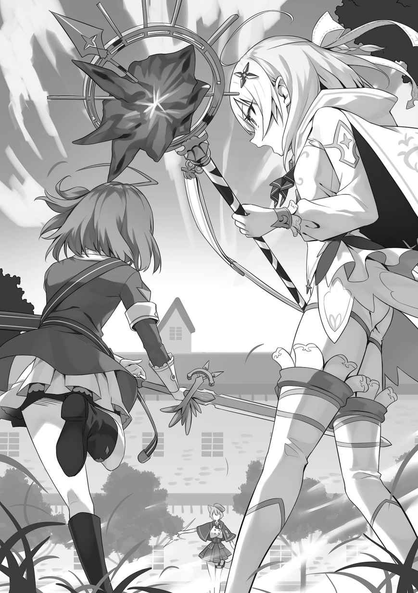

第１章
「んーと……この気象条件に、地域性、季節性を考慮すると──フェリシアさん、前線への物資供給は船を積極的に使いましょう。嵐は来ません！」
「了解です、ティナさん。なら、その分の馬車をアトラス、ベイゼル侯国から脱出して、保護を求めている方々への支援に向けますね。エリーさん、この書類の確認を！」
「は、はひっ！ 頑張りますっ!!」
週初め、炎曜日の朝。
王国南都、リンスター公爵家
私──リィネ・リンスター、ティナ・ハワード、ステラ・ハワード、エリー・ウォーカーの家庭教師であるアレンと姉のリディヤ・リンスターを追って東都から南都へ移動して早数日。
現在、兄様達は侯国連合の中心都市水都にいると考えられます。
けれど、南都からではグリフォンを用いても、水都との往復は不可能。
よって──南都南西部に位置し、水都により近いアトラス侯国侯都を陥落させるべく、
そう結論を出して以来、この場所が私達の新しい戦場だと言えます。
……ただ。
私は、尋常ではない速度で文献を読み書き殴っている白金の
……
そう思っているのは私だけではないようで、「天候予測って、あんなに簡単に出来るのか？」「
普段は弱気で
彼女は、私の
前髪の髪飾りに触れながら考え込んだティナが、書類を横に流しました。
「エリー、ここの計算、間違ってない？」
「は、はひっ！ えーっと──……合っていますっ！」
受け取ったティナ専属メイドのエリーが目を走らせ、
……そんなに、速く確認出来るとは思えないんですが。
私は親友達と先輩の仕事ぶりに頭痛を覚え、赤の前髪を指で
「フェリシアさんはともかく、ティナとエリーがここまで出来るなんて……」
ティナは私と同じ『公女殿下』で、エリーも王立学校の成績では私の方が上位。
水都が昨晩から謎の沈黙を続けている中、
突然、
「リィネさん、怖い顔になっていますよ？ 二人は北都でもこうでした。水都の件は詳報を待ちましょう」
「！ ステラ様……」
私の左隣に座られていた、美しい白金の薄蒼髪を蒼のリボンで結われている美少女──ティナの姉であるステラ・ハワード様に話しかけられました。
軍服姿も相まり、オルグレンの動乱前よりもお
ステラ様が、今度は人差し指で額を押してきました。
「無理は駄目です。ちゃんと休める時に休まないと、いざ、という時に力を発揮出来ません。休憩にしましょう」
「……はい」
私は内心の
今の仕草、少し兄様に似ていて余計に恥ずかしさが増してしまいます。……うぅ。
ステラ様が凛々しく号令をかけられます。
「ティナ、フェリシアも手を止めて。皆さんも休憩を」
『はいっ！ ステラ
この数日で、完全にメイド達と兵站士官達の心を掌握された次期ハワード公爵に返答し、室内にほっとした空気が流れます。
ステラ様が、みんなの手綱を握っているのが分かる光景ですね。
これが、ハワードの──『軍神』の血統！
そんな中、ティナとフェリシアさんが不満そうに
「御姉様！ まだ出来ますっ！」「ステラ、この書類の処理を終えてからに……」
「エリー、今の二人の言葉をメモしておいてくれる？ アレン様に御報告したいの」
「「！」」「は、はひっ」
対して、ステラ様はあっさりとそれを封じます。
兄様が聞かれたら……きっと、とっても意地悪なことを言われますね。
二人は口をパクパクさせ、やがて、ガクリと頭を下げました。
『おお〜』
様子を
ステラ様がティナとフェリシアさんへ頷かれます。
「よろしい。私は素直な妹と親友が大好きよ」
「……御姉様の意地悪」「……アレンさんに似てきてない？」
ティナは頰を膨らまし、フェリシアさんは眼鏡を外し、うちのメイド隊第四席であるエマの差し出した布で拭きながら唇を
生徒会長さんは
「ふふ♪ そうかしら？ サリー、エリー、紅茶を
「畏まりました、ステラ御嬢様」「はひっ！」
ハワード公爵家メイド隊第四席のサリー・ウォーカーさんとエリーが、紅茶の準備を始めました。
一切の無駄がない洗練した動作。
シーダが手を組んで「月神様……私もいつか、ああいう風にリィネ御嬢様に紅茶を淹れられるのでしょうか？」と祈っています。
眼鏡をかけ直したフェリシアさんが、周囲を見渡されました。
「あれ？ そう言えば、カレンは？」
カレン──兄様とは血の
……そう言えば、先程から姿を見かけていません。
私の
「リリーさんもいません……はっ！ も、もしかして、二人で水都へ抜け駆けをっ!?」
「──失礼ですね。私はそんなことしません。ティナじゃあるまいし」
後方から冷静な声がしました。
振り返り、ティナがいきり立ちます。
「む〜！ カレンさん、どういう意味──……ふぇ？」
「あら？」「カレン？ その服は……」「！」「わぁぁ」
薄蒼髪の公女の瞳が大きくなり、ステラ様、フェリシアさん、私、エリーも驚きます。
灰銀色の髪。一度は触ってみたいと
頭には半妖精族の
ここまでは
濃い紫と淡い紫の紋様が重なる異国の装束と長いスカート。足には革製のブーツ。
──とっても、似合っていますっ！
副生徒会長さんは、私達の視線を受けてそっぽを向かれ腕組みをされました。
「……王立学校の制服の洗濯が間に合わなくて、仕方なくね。あと、リリーさんが……」
大会議室を軽やかに駆ける音。
黒のリボンで結った長い
嬉しそうに頰ずり。
「うふふ〜♪ カレン御嬢様、と〜ってもお似合いですぅ〜☆」
「きょ、今日だけ、今日だけです」
カレンさんは恥ずかしそうにされながらも、振りほどこうとはされません。
副公爵家長女でありながら、メイドを務めている
「リリー、
「リィネ御嬢様、私──気付いたんです」
カレンさんから離れたリリーが、大きな胸に自分の右手を押し付けました。
何時になく真剣な表情。ど、どうしたんでしょうか？
「私はリンスター公爵家メイド隊第三席です。
額に手をやり、私は目を閉じました。この従姉……。
リリーが右手を握り締めました。前髪に着けている花飾りが揺れます。
「そこで、私は
『…………はぁ？』
近くにいたほぼ全員の声が
ソファーに座り、フェリシアさんの書類を眺めているカレンさんを指し示します。
「我ながら天才的な思いつきですぅ〜★ 見てくださいっ！ カレン御嬢様の愛らしさをっ!! 獣耳と尻尾とが相まり、圧倒的な攻撃力を誇っています。これを見て『……私も着てみようかな？』と思わないメイドさんがいるでしょうか？ いいえ、いませんっ た・と・え・ばぁぁぁ…………」
た・と・え・ばぁぁぁ…………」
「ひぅ」「ひっ」
テキパキと紅茶を淹れていたエリーと、見学中のシーダが身体を震わせました。
リリーが両手を合わせ、詐欺師の笑み。
「エリー御嬢様、シーダちゃん、素直に答えてくださいねぇ〜？ この服を着たカレン御嬢様──
「「…………」」
二人は顔を見合わせ、黙り込ました。
ちらっ、と紅茶を飲んでいる副生徒会長さんを見た後で、素直な感想を口にします。
「えっと……か、可愛いでしゅ……」「と、とても可愛らしいなって、思います」
「ありがとうございます〜☆ では、次にぃ〜むぐっ」
「……も、もういいですからっ！」
ティナが耳元で
「（カレンさんがああいう風になられるの、珍しいですね）」
……確かに。
ステラ様とフェリシアさんも、楽しそうに同級生を眺められています。
年上メイドが拘束を抜け出し、叫びました。
「え〜！ カレン御嬢様も、さっきまでは
「!? ま、まさか、
「は〜い」
カレンさんをからかい終え、満足した様子のリリーがエリーに近づき、淹れ終えた紅茶を配り始めました。うちのメイド隊第三席なだけはあり、動きに隙がありません。
紅茶のカップを受け取られたステラ様が質問されます。
「カレン、真面目な話って？」
花付軍帽を
瞳には固い意志が宿っています。
「私、今からリリーさんと一緒にアトラスの侯都を守る最後の盾──『
「「えっ？」」「カレン先生……」「前線って……」「…………」
私は息を
──『七塔要塞』。
アトラス侯国侯都セツ北方にあり、都を守護している大要塞です。
大陸動乱時代に古代の教会を再利用する形で築かれ、現在は侯国随一の良将と
その
軍は要塞早期攻略に
カレンさんが淡々と自分の決断を説明されます。
「この数日間で理解したわ。本営に私がいても……ティナやフェリシアの書類仕事の
「私も行きたいですっ！」
誰よりも早くティナが立ち上がり、立候補しました。
胸の奥が、チクリ、とします。
この首席様は何時も私の前を歩いていく……。
けれど、副生徒会長さんは頭を振られました。
「ティナは駄目です」
「ど、どうしてですかっ!?」
前髪を逆立たせ、ハワードの公女殿下が
対して、カレンさんが冷静に指摘されます。
「貴女は戦域全体の天候予測を。それは誰でも出来る仕事じゃありません」
「…………だ、だけど」
「カ、カレン先生、わ、私も……」
おずおず、とブロンド髪の親友も挙手しました。
「エリー。貴女にはティナとフェリシアを補佐する大事な役割があります。兄さんが貴女をよく褒めていた理由、改めて理解出来ました」
「あぅ……あ、ありがとうございます」
真正面からの称賛を受け、エリーは顔を伏せました。首筋まで赤くなっています。
胸のチクチクが大きくなっていきます。リィネ──貴女はどうしたいの？
椅子の後ろにリリーがやって来るのが分かりました。
カレンさんが不敵な笑みを浮かべられます。
「兄さんの残した魔法式で改善されたとはいえ、魔法を使うと体調不良になってしまうステラ・ハワード公女殿下には、わざわざ言わなくても分かりますよね？」
「戦えない身じゃ前線には出られない。ティナとフェリシアの手綱を握る役割もある……カレン、今の言い方、アレン様にそっくりよ」
うちの家中でさえ『聖女様』とも呼ばれ始めている美少女も、笑みを返されました。
御二人の間にある固い
「当然。だって、私は兄さんの世界で一人しかいない妹なんだから。ティナ、フェリシア、あんまりステラへ迷惑をかけないようにね。エリー、ステラをお願い」
「……はーい」「……カレン、ひどいよー」「は、はひっ」
ティナは不承不承といった様子で答え、エマやメイド達の介護を受けているフェリシアさんも唇を
早く言わないと──『私も連れて行ってほしい』と。
勇気を振り絞る前に、カレンさんが私を見ました。
「リィネ、私と一緒に行きませんか？」
「…………え？」
カレンさんが近づいて来られ、私の顔を覗きこんできました。
「今の貴女の顔は、外の空気を吸った方が良いように見えます」
「っ！ 私は……」
「リィネ？」「リィネ
ティナとエリーが心配そうに私の
……この二人は悪くありません。
弱いのは、こんなにも優しい親友達に嫉妬を抱いてしまった──私の心。
リィネ、思い出しなさい。
貴女はリンスターの公女殿下。『
何より……こんな私じゃ、兄様の背中に何時まで
椅子から立ち上がり、宣言します。
「行きます。私も……私も連れて行ってください！」
カレンさんが大人びた表情になられました。
「──了解です。リリーさん」
「はい〜♪」
突然、従姉が私を後ろから抱えて来ました。
嫌な予感が……とても嫌な予感がします。
「リリー？ な、なに？」
「うふふ〜……リィネ御嬢様、リンスターの軍服って目立つと思いませんかぁ？」
今の言葉を受け、私の頭が答えを導き出します。
ほぼ同時に理解したらしい、ティナとエリーの顔も加担者の顔になりました。
ステラ様、フェリシアさん、メイド達までも同様です。シーダまでぇぇ……。
動揺する心を落ち着かせながら、リリーに告げます。
「……私は着ないわよ。第一、そんなの前線にいらっしゃる
「
「なっ!? ま、まさか、そ、そんなっ！」
御祖母様──『
御祖母様にまで服装の許可を取っているのは想定外ですっ！
「リィネ、諦めて」
「そ、そんなぁ……ス、ステラ様、フ、フェリシアさん……」
けれど、御二人はお茶菓子を食べながら、あっさりと断じられました。
「可愛いんじゃないかしら？」「お似合いだと思います♪」
「うぅぅ……」
脱力し、リリーに運ばれて行く私の耳を
「それじゃ──行ってくるわ。詳しい話は今晩、部屋でね」
＊
私達を乗せたグリフォンは広大なアヴァシーク平原を
現在はリンスター副公爵領となっている旧エトナ、ザナ侯国と、交戦中のアトラス、ベイゼル両侯国とにまたがるこの平原は、
会戦の最終盤で姉様が放たれた禁忌魔法『
……改めて、
「見えてきましたよ〜あそこが総司令部です〜」
グリフォンを操るリリーが振り向き、前方を指差しました。
私は独りで乗れるのですが、本営のみんなが許可してくれませんでした。遺憾です。
隣を飛ばれているカレンさんも目を細められました。
なだらかな丘の上に各家の軍旗がはためき、
手を振ると
「カレン御嬢様、
「
「ですね〜」
軽口を
この子の実家である副公爵家は、グリフォン飛翔騎士団を持っていますし、そこで覚えたのかもしれません。
そうこうしている内に、ゆっくりと地面が近づいて来ました。
数十名の副公爵家の騎士達が
御祖母様には魔法通信で伝えてあるらしいですが……私は自分の服を見やります。
カレンさんの着ている服の色違いで、濃い赤と淡い赤の組み合わせ。警戒するのも当たり前でしょう。私は騎士達へ向かって叫びます。
「御苦労様、リィネ・リンスターです！ 御祖母様はいらっしゃるかしら？」
「！ 失礼致しましたっ！ 『緋天』様は本営の
「ありがとう」
先頭にいた壮年の騎士へ
軍旗を見る限り……御父様が直率されているリンスターの本軍やポゾン侯爵の軍はいないようですね。
「リィネ御嬢様、降ります〜」
衝撃を感じ、グリフォンが地面に着地。リリーが飛び降り、両手を広げました。
私はしかめっ
「ぶ〜！ そこは、飛び込んでくる場面ですぅ〜」
「みんなが見ているんだから、
リリーに文句を言っていると騎士達の列が割れ、一糸乱れぬ様子で整列しました。
奥から、二人の女性が歩いて来ます。
一人は長い
その女性に付き従っているのは、長身で長く淡い紅髪。前髪に銀の髪飾りをつけ、耳は長く、肌はやや褐色寄りの美女。
大陸最強魔法士の一人と
御祖母様が両手を合わせられ、
「あらあら。
「御祖母様、突然来てしまって、申し訳──きゃっ」
優しく抱きしめられ、
「うふふ〜♪ リィネちゃん、よく来てくれたわねぇ。しかも、そんな可愛らしい服を着て！ ケレブリン、映像宝珠に撮っておいてくれる？」
「はい、大奥様。リリー御嬢様とそちらの御嬢様、リィネ御嬢様の御傍へお願い出来ますでしょうか」
久しぶりに会った前副メイド長が映像宝珠を取り出し、リリーとカレンさんへ指示を出しています。
……そうでした。ケイノスの一族は『リンスター家にお仕えする
私は、頭を
「お、御祖母様っ！ は、離してくださいっ!! ……もぉぉ」
「あらあら〜」
拘束を逃れ、服の乱れを整えます。通信宝珠兼用の髪飾りを直して
「こほん。御祖母様、私達は遊びに来たわけじゃありません。
「狼族、ナタンとエリンの娘、カレンと申します。前公爵夫人様の
「まぁまぁ……」
緊張した面持ちのカレンさんが、深々と頭を下げられました。
周囲の騎士達もどよめきます。「……おい」「ああ」「英雄の妹、か」。
御祖母様が、そっと狼族の少女の両手を握りました。
慈愛
「一度会ってみたい、と思っていたの。リンジー・リンスターよ。カレンちゃん、と呼んでもいいかしら？ リンジーと呼んでちょうだい」
「はい、リンジー様」
「うふふ♪ ありがとう、カレンちゃん」
御祖母様の背筋がすっと伸びました。
周囲の空気が張り詰め、騎士達も居住いを正します。
普段の穏やかな雰囲気と異なる──『緋天』としての御顔。
「
御祖母様がカレンさんと視線を合わせられます。
その瞳には──
「リンスターは恩義を忘れない。何があっても忘れない。まして、それが──
「……っ」
カレンさんが
私は胸に手をやりました。
……兄様、私も必ず恩をお返しします。
カレンさんが言葉を振り絞ります。
「そんな。私の方こそ、リディヤさんには……そ、その、良くしてもらっていて……」
「リディヤ
緊迫した空気を年上従姉が吹き飛ばし、狼族の少女を後ろから抱きしめました。
まったく、この子はっ！
でも……良い機です。
「ええ、そうね、リリー。姉様ったら、妹の私よりもカレンさんを可愛がっているもの。嫉妬してしまうわ」
「っ！ リィネまでぇ……」
演技に乗ると、カレンさんが情けない声を出されました。
広場の空気が穏やかになり、ケレブリンや騎士達も表情を綻ばせます。
こういう所はリリーに
「仲良しなのは良いことだわぁ。面倒事が片付いたら、アレンちゃんと一緒に遊びに来てちょうだい。約束よ？」
「……はい。有難うございます」
「うふふ〜♪ さ、天幕へ。うちのケレブリンが焼いた
「ご満足いただけると確信致しております」
物騒な異名とは裏腹に、趣味がお菓子作りな前副メイド長が後を引き取ります。
カレンさんが私へ目配せ。はい、分かっています。
「御祖母様、お茶の前に私達が来た理由を説明──」
「失礼っ！ 此方に娘が──そこにいたかっ、リリーっ！！！！！！！！！！！」
私の声は、上空から
珍しくリリーが嫌そうな顔をし「……
軍用グリフォンが広場に着地。胴に帯を着けています。
──リンスター副公爵家を示すそれ。
私は地面に降り立った、軍服姿の赤髪
「……リュカ
「ん？ ああ、すまぬ、リィネ。グリフォン乗りは声が大きくなってしまってな。こればかりは通信宝珠があっても変わらぬ。……その服装は？」
頭を
私は後の質問を無視。カレンさんを叔父様へ紹介します。
「リュカ叔父様です。叔父様、アレン兄様の妹さんのカレンさんです」
「おおっ！ 『西方単騎行』を成し遂げた──このような場で会えるとは。リュカ・リンスターだ。副公爵を務めている」
「……
やや驚かれながらも、そこは副生徒会長。きちんと受け答えされます。
私を盾にしながら、リリーが叔父様に質問しました。
「……で？ 天下の副公爵殿下が、一メイドの私に何の用があるんですかぁ？」
叔父様の太い眉毛がつり上がりました。
「お前はまたそのようなっ。家に帰って来ぬかと思えば……今は戦時故、すぐに戻って来いとは言わんが、いい加減家に戻って来て婿をだな──」
「戻りませんっ！」
いきなり親子
「（大丈夫ですよ。叔父様とリリーのやり取り、家中の人間は慣れっ子なので）」
「（……なるほど。ルブフェーラ公爵家もちょっと変でしたが、公爵家って……）」
「（い、一緒にしないでくださいっ！）」
他はともかくとして、私はその枠に入っていません。……多分ですが。
リリーが
「だからぁっ！ 何度も言わせないでください。私はメイドさんですっ！ 縁談の御話も、万歩譲って、『アレンさんに勝てる人ならお話を聞いてもいい』と答えた
「ぐっ…………まぁ、良い。その言葉を忘れるなよ？」
おや？ 叔父様が引き下がりました。普段はもっともっと長いんですが。
不思議に思っていると、御祖母様が問われます。
「リュカ、何かあったのかしら？」
「……はっ」
叔父様は
機密文書なのか、
「水都の魔法通信を解析しているサイクスからです」
「そう……ケレブリン」
「はい、大奥様」
前副メイド長が書簡を受け取って封を解き、御祖母様に差し出されました。
普段明るい御顔が曇り、私達を手で呼ばれます。
回り込んで書簡に目を通し──
『昨晩未明からの、水都の沈黙は敵方の大規模魔法通信妨害によるもの』
『魔法式からして聖霊教の関与は確実。交戦継続派と結びついている模様』
『リディヤ御嬢様とアレン様は、水都内で大規模交戦に巻き込まれたと思われる』
『聖霊教が近日中に何事かを企てている予兆あるも詳細不明』
姉様と兄様が水都で交戦っ!?
そこで──……私は理解します。
書簡にサインをしたのは、サイモン・サイクス伯と伯爵令嬢のサーシャの二人のようですが、追記として『魔法通信解読に全力を尽くすも、暗号が格段に難解になっている為、現状ではこれ以上の情報入手は至難』と書かれています。
……あのサイクスが弱気だなんて。聖霊教はどれ程の戦力を水都に集めて？
リリーが「アレンさん、リディヤちゃん、アトラちゃん、サキ、シンディ、みんな……」と小さく名前を呼びました。
水都にはうちのメイド達も常駐していました。巻き込まれているでしょうね……。
御祖母様が視線を南の方向を向かれました。
「……リーンと教授ちゃんの嫌な予感が当たったみたいねぇ。カレンちゃん、リィネちゃんは要塞を偵察しに行きたいのよね？」
「はい」「地図だけじゃ、分からない状況もあると思うので」
カレンさんと私は同時に首肯しました。
事態は想像以上に切迫しています。急がないとっ！
「……母上。リィネ達だけでは」「奥様、私が護衛を」
叔父様が反対される前に、ケレブリンが一歩進み出てくれました。
前副メイド長はとても強く優しい人なのです。
「お願い出来るかしらぁ？」
「お任せください」
長身メイドは美しい所作で敬礼しました。
御祖母様が
「ケレブリンを護衛につけるわぁ。無理は禁止よ？ リリーちゃんもね」
＊
「これはこれは……リィネ御嬢様。このようなむさ苦しい場所にようこそ。陣中故、片付いておりませんが、どうか御許しを。
最前線司令部として使われている天幕内に、
魔法通信で私達の到着を知っていた、
簡素な机の上には地図と駒。要塞の攻略法を考えていたのでしょう。
イブリン伯は一見
私も敬礼を返し、質問します。
「トビア、早速ですが──状況はどうですか？」
勇将は私の後ろにいるカレンさんとリリー、そしてケレブリンを一瞬見た後、両手を挙げ、頭を振りました。
「連日退屈をかこっております。連中、要塞に引き籠っておりますので。かといって、無視してアトラスの侯都へ突撃を図れば後背を突かれましょう。ロブソン・アトラスは兄である侯爵と異なり、優れた統率力を持つ戦意旺盛な男です。御嬢様方、
若き伯爵が手招きしたので、私達も駒の置かれた地図を
空中偵察の成果なのでしょう。具体的な地形と要塞の形がはっきりと分かります。カレンさんが感想を零されました。
「……まるで、湖の中にお城があるみたい……」
侯都セツ郊外に位置する『
中央には古い教会。現在は総司令部に使われているようです。
城壁は三重で、城壁各所には七本の巨大な
西側には海。東と南に自然の河川。陸地があっただろう北側にも海水を引き込んだ大
……『難攻不落』を
トビアが、わざとらしく壮麗な剣の
「同意見です。『
「！ 私を知っておられるのですか……？」
「無論です」
狼族の少女が驚くのを見て、勇将は
そんな中、リリーは包囲軍の駒を動かし「むむむ〜？」と遊んでいます。
若き美形の伯爵は気にした様子も見せず、カレンさんに
「『東都で聖霊騎士と果敢に戦い、故郷の窮地に単騎で西方行を志願。見事その任を成し遂げた狼族の
「は、はぁ……」
獣耳と尻尾に緊張。カレンさんは意外と人見知りをされます。
私は左手で伯爵を制しました。
「トビア、本題を。敵の防備態勢はどうなのですか？」
「はっ！」
貴公子然としていた顔が前線の将のそれへと変わり、指揮棒を手に取りました。
侯都周囲の地形を詳しく説明してくれます。
「見ての通り──『七塔要塞』は三角州上に築かれております。島内の樹木は払われ死角はありません。また、岸と城壁との間には人為的な斜面も築かれております、七つの尖塔によって展開される戦略結界も強大でして……幾度かグリフォンによる空中襲撃も行いましたが、
「入り口は正門一ヶ所ですか？ 随分分厚いようですが」
「はい。……あれもまた厄介でして」
トビアが私の質問に顔を
「
「……なるほど」「大奥様が暴れられましたからね〜」「リ、リリーさんっ」
私が考え込む中、リリーはカレンさんの後ろに回り込んで抱き着きました。
この
『並大抵の炎魔法は通じない』……だったら。
「トビア、一つ試してみてもいいですか？」
「……は？」
戦場で臆したことなし、と
姉様から譲り受けた剣の鞘を叩き、提案を告げます。
「私だって『リンスター』。炎属性極致魔法『
最後の最後まで難色を示したトビアを何とか説き伏せたものの……私はグリフォン上で眼下の光景に圧倒されていました。
「近くで見ると、想像以上に大きいですね……」
城壁の兵士達が私達を指差しています。
北側の大水壕は、
固く閉ざされた正門は黒光りし、鋼の分厚さがはっきりと理解出来ます。
南方に
後方の対岸では万が一、敵軍が出撃した場合に備えてトビア率いる『紅備え』が完全武装で待機し、要塞上空ではカレンさんとケレブリンが操る二頭のグリフォンが旋回中。
二人は、私の攻撃前に陽動を行ってくれる手筈になっています。
髪に着けた通信宝珠から、報告が入ります。
『リィネ、何時でもいいわよ』『くれぐれもご無理はお
「了解です、カレンさん。ケレブリン、分かっているわよ。頼りになるメイドさんもいるから、心配しないで」
『は〜い。私はと〜っても頼りになるメイドさんです〜♪』
私の隣でグリフォンを操っているリリーが元気よく返事しました。
宝珠から苦笑が漏れます。
『じゃあ、始めるわ』『万事、ケレブリンにお任せ下さい』
通信が途切れました。
旋回していた二頭のグリフォンが上昇していき、停止。
直後──
『！』
後方の味方からどよめきが巻き起こりました。
紫電と赤黒い霧が、要塞全体を覆っていきます。
すると、甲高い鐘の音。尖塔の先からは鮮やかな光が発生。
七本の光柱が精緻な結界を構築し、紫電と霧を消失させていきます。
二人の魔法ですら長く持ちそうにありません。聞きしに勝りますね！
私は拙い風魔法を使いつつ、グリフォンの上に立ち上がり剣を抜き放ちました。
「リリー！ 準備はいい？」「はい〜☆」
従姉が大きく右腕を振ると、無数の炎花が周囲に舞い踊ります。
目を閉じ集中──兄様、姉様、力を貸してください。
ふっ、と息を吐き、目を開けて剣を高く掲げます。
「いくわっ！」「はい〜」
魔力を剣の切っ先に集中させ──リンスターの象徴。炎属性極致魔法『火焰鳥』を顕現。
「やぁぁぁぁぁ！！！！！！！！！！！！！！！」
今の私が放てる、最大火力の炎の凶鳥を正門へ向けて解き放ちます。
大水壕の海水が蒸発して白い湯気を上げ、城壁の上の敵兵達が武器を慌てて構え魔弾を乱射します。
けれど──止まりません。
兄様があっさりと分解されるので忘れがちですが、本来極致魔法は放たれたら、止めることは不可能とされている魔法。
凶鳥は敵兵が次々と放つ水弾、
「!?」「ん〜……」
悲しい叫びをあげながら砕け散り、消えました。
目を凝らすと、トビアが言っていた通り、百を超える耐炎結界が発動しています。
敵も馬鹿ではない、という実例ですね。
「いたぞっ！！！！！！ そこだっ!! 撃てっ！！！！！！」
城壁の上にいる敵将の
兵士達が手に持っているのは……魔銃？
次々と光を放ち、百以上の『
「っ！」「おっと〜」
リリーが巧みにグリフォンを操作しながら炎属性初級魔法『
周囲を飛ぶ炎花も数を増していき、私を守るように布陣していきます。
カレンさんとケレブリンのグリフォンもわざと高度を下げ、要塞上空を素早く飛び回り、敵部隊を混乱させつつ、私達に向けられる魔法を分散させてくれます。
再び放たれた数百発の『水神弾』を炎花で防ぎ切りながら、従姉が振り返りました。
『メイド』さんではなく──副公爵家長女、リリー・リンスター公女殿下としての顔。
「リィネちゃん、先に退いて。『火焰鳥』が防がれた以上、敵は勢いづくかもしれないし、私、
「……ええ」
私は手綱を引き、グリフォンを後退させました。
魔法が
今の私は──……リリーよりも弱い。
悔しさが込み上げてますが、義務は果たさないと。
歯を食い縛りながら、通信宝珠で話しかけます。
「……カレンさん、ケレブリン、撤退します。トビア、部隊を陣地まで後退させて下さい。交戦は無用です」
『了解』『リィネ
敵魔法の射程外まで脱出した私は、グリフォンを操り高度を上げます。
既にカレンさん達とリリーも退き、要塞からの魔法も止まりました。
『アトラス侯国万歳っ！！！！ 連合万歳っ！！！！！』
わざわざ全域での魔法通信を用いての
私は
こんな時、兄様がいてくれたら──……。
『力は自分や大切な人、信念を守る時に使ってください』
王立学校の入学式の日。馬車の中で兄様が
そして……自分の左頰に触れます。
王都でティナに張られたお返し、まだ出来ていませんでしたね。
私が気合を入れ直していると、リリーのグリフォンも追いついてきました。
『リィネ御嬢様〜☆』
無事のようですね……良かった。
手を振りながら、七本の光柱が立ち昇っている眼下の要塞を見つめます。
「難攻不落の『
トビアが率いる『
力攻めでも落とせはするでしょうが、犠牲は膨大になってしまいます。難題です。
頼れる相手が身内しかいなかったかつての私なら、音をあげていたかもしれません。
でも、今の私には──通信宝珠でカレンさんが尋ねてこられました。
『リィネ、この後どうするの？ 南都に戻る？』
「──いいえ」
私は空を見上げます。
太陽は高くグリフォン達も元気です。ならば！
「まだ時間はあります。要塞の周囲も偵察しておきましょう。私達では思いつかなくてもティナ達なら妙案を思いつくかもしれません。ケレブリン、着いて来てくれる？」
『はい。大奥様にもそう言われております』
「！ 御祖母様が……」
胸が熱くなります。私は一人じゃありませんっ！
隣でグリフォンを
「みんな、行きましょうっ！ 私達に出来ることをする
＊
「……で？ 要塞周囲も偵察して来たんですか？ 敵兵が出て来るかもしれないのに？ 私とエリーもいないのに？ グリフォンまで借りて？ ふ〜ん……」
「あぅあぅ。リ、リィネ御嬢様、カレン先生、危ないです……めっ、ですっ」
南都に私達が帰還したのは、結局その日の夜になりました。
入浴して
ベッドの上で、
「あ、相手の対応を確認する為には仕方なかったんです。私達だけじゃなく、ケレブリンも護衛について来てくれましたし」
「ケレブリン？」「どなたですか？」
友人達の顔に疑問が浮かびました。
隣のベッドの上で、カレンさんの髪をブラシで
「リンジー・リンスター前公爵夫人付きのメイドさんです。幾度か本営でお見掛けしました。カレン、動かないでっ！ ……リィネさんと一緒だったのに、無理してぇ」
「はいはい、気を付けるわ。でも──成果は得られた」
薄黄の寝間着姿のカレンさんが映像宝珠を起動。
目の前の壁に、
副生徒会長さんが宝珠を動かしながら、目を細めます。
「『七塔要塞』に死角はないわ。西は海。東と南の河川も流れが速くて、渡河は難しい。北側の
「都市自体も三重の城壁でぐるりと囲まれ、兵達の過半は魔銃を装備しています。正門には強大な耐炎結界が張り巡らされていて……『
私の『火焰鳥』が四散する映像に切り替わります。
「リィネ」「リィネ御嬢様」
親友達が頭を
先輩方の優しい視線が突き刺さり、身体が熱くなります。
私は
「こほん──開戦後、グリフォンに
「……む〜」「難しそうです……」
首席様は私とカレンさんの報告を聞いて頭を抱え、天使なメイドも顔を曇らせます。
テーブルに書類を置かれた、ステラ様が
「リィネさん、本当にお疲れ様。文字と映像とじゃ認識も変わるわ。みんなで考えてみましょう。でもその前に──攻撃を含む危険な威力偵察を制止しなかった副生徒会長にはお説教が必要かしら？」
獣耳と尻尾を動かし、カレンさんが身体を小さくされます。
「……ステラ、脅さないでよ」
「私だけじゃなく、フェリシアだって同意見よ。そうよね？ こっそりと昼食中も働こうとしていた、
「ス、ステラ!? ……う〜」
突然、矛先を向けられた眼鏡をかけ、胸の豊かな少女の身体が震えました。
あわあわしながら、ブランケットを
ティナとエリーも私の背中に隠れ、顔だけ出して早口で弁明しました。
「お、御姉様。わ、私は少ししかしていません！」
「わ、私も、少しだけ書類作業を進めただけです」
「……
私の親友達も仕事大好き人間だったようです。
ステラ様が人差し指を立てられました。
「ええ、ちゃんと見ていたわ。でも、明日はきちんと休まないと駄目よ？」
「「は、はい」」
ハワード公女殿下主従は息の合った返事。付き合いの長さを感じます。
「リィネさん」
「は、はいっ！」
次期ハワード公爵になる美少女に名前を呼ばれ、私は背筋が伸びました。
「敵情偵察は大事な任務です。でも、貴女が傷つかれたら、悲しまれる人もたくさんいるのを忘れないでください。ふふ──ティナとエリーは、一日中ずっとそわそわしていて」
「！ お、御姉様っ！」「！ ス、ステラお姉ちゃん、い、言っちゃ駄目ですぅ」
「……あ」
ティナとエリーが慌てた様子で、ベッドの上に立ち上がりました。
二人の両頰はほんのり赤くなっています。
──私って馬鹿ですね。悩む必要なんてなかったのに。
左手で心臓を押さえ、慈愛
「ありがとうございます。気を付けます」
「アレン様の受け売りです。カレンは後でじっくりね。フェリシアも文句を言い足りないみたいだし」
「……覚悟しておくわ。フェリシア、そろそろ放して」
「やだ。一緒のベッドで寝るっ！」
「……もう」
室内がのんびりとした空気に包まれます。
これで、姉様と兄様がいらっしゃれば……。
ティナとエリーに髪を
「失礼致します」「失礼しま〜す♪」
「エマ？ リリー？ 何かあったの？」
部屋に入って来たのは黒茶髪と
リリーはともかく、エマがこんな時間に？ あと、サリーさんがいません。
引いて来た台車には、古書が積み重ねられています。
小首を
「うふふ〜♪ ティナ御嬢様、フェリシア御嬢様、御要望の品ですよぉ☆」
「「！ やったぁぁ！」」
二人が瞳を大きくし、歓声をあげました。
それだけに収まらず、ベッドから降り「フェリシアさん♪」「ティナさん♪」と呼び合いながら、両手を
私は楽しそうにしている年上メイドへ問いかけました。
「リリー？ それって書庫の鍵よね？ あと、この本はどうしたの？？」
「えっとですねぇ……」
「
扉の近くにいるエマが簡潔に教えてくれました。
王国四大公爵家の一角である我がリンスター家の書庫の文献を、他家の人間に見せる。
姉様と一緒に初めて南都に来られた時、兄様にも許可を出されていましたし。
……あの時は、兄様が書庫に入り浸り過ぎて姉様の御不興を買われていましたね。
ティナの前髪が左右に揺れています。
「よ〜しっ！ リィネ、エリー、頑張りましょうっ！」
「……え？」「は、はひっ？」
時刻は深夜。窓の外も漆黒の闇に包まれています。
なのに……今から文献に当たる、と!?
フェリシアさんも眼鏡を直され、拳を握り締められました。
「要塞内の敵兵数は目算がついています。後は食料事情と水源が分かれば立て籠もれる最大日数等の算出も可能……こうしてはいられませんっ！」
こ、この二人は……。
私が
「張り切っておられますね〜☆ あ、そう言えば──うちの書庫の文献の中には、お化けを呼び出す物が紛れているとかっていう噂がありましたっけ？ 何でも、古い古い召喚魔法の魔法式が込められているって。ですよね、エマ？」
「「「……えっ？」」」「お化け？」
私とエリー、フェリシアさんの声が重なり、ティナは小首を傾げました。
知的なメイド隊第四席が答えます。
「あ〜そんな噂もありましたね」
「〜〜〜きゅっ！」
先程までやる気を
カレンさんが目を細められ、頭をぽん。
「……フェリシア、調べるのは明日にしておけば？」
「あ、足が
上半身を起こし、ぽかぱかとフェリシアさんがカレンさんの腕を叩かれます。
可愛らしい光景で、現実逃避をしていると──左袖が引かれました。
視線を向けると、エリーの弱々しい訴え。
「あぅぅ……リ、リィネ御嬢様ぁ……」
「……大丈夫よ、エリー。大丈夫」
心を落ち着かせ、今すぐにでも文献を読み始めようとしている公女殿下へ声をかけます。
天使なメイドさんは私が守ってみせるっ！
「ティナ、読むのは明日に──」「リィネ。もしかして怖いんですか？」
最適な返し。両手を合わせ、満面の笑みを浮かべているのが憎らしい。
……そうでした。
この子は王立学校首席合格者。
視線を
「……そんなわけないでしょう。私はリィネ・リンスター。お化けなんて、出て来た所で燃やしてやりますっ！ でも……でもですね」
「あ、大丈夫ですよ？ 怖いなら、私が手を握っていてあげます」
「っ！ こ、この首席様ぁぁぁっ！」
「きゃーお化けが怖い次席様が襲って来ますー☆」
私が
わなわな、と
「はい、そこまで」「ティナ、フェリシア、そのへんにしておきなさい」
「御姉様、カレンさん……」
ステラ様とカレンさんが意気盛んな首席様を窘め、立ち上がりました。
苦笑しながら、
「全部は駄目よ？ 明日も朝練するんでしょう？ 私とカレンは紅茶を
「やったぁ！」「うぅ……ス、ステラぁ、カレン……」
ティナがはしゃぎ、フェリシアさんが震えられます。
……あれ？
リリーはともかくエマもいるのに、ステラ様達が紅茶を淹れに？
ティナがベッドの上で無い胸を張りました。
「フェリシアさんっ！ 私達がついてますっ!! さぁ──調べましょうっ！」
「人数に含まれてっ!?」「あぅあぅ」「ティナさん……」「元気ですね〜」
私とエリーが
待機していたエマが、片膝をつき
「フェリシア御嬢様──不肖、このエマにお任せ下さいませ。
……混乱下にある王都の？
不思議に思っていると、リリーが私を抱きしめてきました。
「あ、ち、ちょっとっ！」
「読み始めますよぉ〜♪ ──お化け、出て来るといいですね★」
「楽しみですっ！」「ひぅっ！」「で、出てこないわよっ！」「うぅぅ……」
私達は、それぞれ古書を手に取ります。
ステラ様とカレンさんが部屋を出て行かれ──ふと、振り返ると深刻そうな表情の御二人の顔が一瞬見え、扉が、バタンと音を立てて閉まりました。
＊
「おや？ もう、終わりですか？ リィネ？ ティナ？」
目の前に立つ、王立学校の制服を着たカレンさんは淡々とした口調で、私達に問いかけてきました。手には武器も持っていません。
「くっ！」「あ、あれだけの数の炎弾と氷弾を全部躱したっ!?」
早朝から非現実的な光景を
南都に来て以来、毎朝、交代交代で挑んでいるのですがまだ一回も勝てません。
訓練場の外側では、ステラ様、フェリシアさんと観戦しているエリーが一生懸命応援してくれます。
「テ、ティナ御嬢様、リ、リィネ御嬢様、頑張ってください！」
……昨晩、あんなに
隣で
訓練場一帯に紫電が飛び散り、カレンさんの宣告。
「今度は私から行きますっ！」
雷を
「ティナ！」「分かって、ますっ！」
私達は炎属性初級魔法『
カレンさんが得手とされているのは、『
魔弾の速射では捉えきれませんでしたが、これならっ！
「良い戦術判断ですが」
「なっ!?」「くぅっ！」
炎波と氷波に、カレンさんが雷を纏わせた左手を突き出され──衝撃と共に、炎波と氷波をあっさりと突き破りました。私達は腕を掲げて防御。
カレンさんが獣耳と尻尾を逆立てながら、聞いてきます。
「これくらいの炎と氷ならば問題なく貫けます。そろそろ終わりにしますか？」
「まさか」「本番はこれからですっ!!」
私は
こういう時、この子の快活さには救われますね。言葉にはしませんけど。
「その気概や良し。けれど──」
「「っ!?」」
首元を、そっと触られました。
──後方からカレンさんの涼やかな指摘。
「気合だけで勝ちを渡す程、私は甘くありません。ティナ、リィネ──
「くっ！」「くぅっ！」
私達は慌てて振り向き、
手を組み、心配そうにエリーとシーダが私達を見守っています。
「あぅあぅ……ティナ御嬢様、リィネ御嬢様…………」
「月神様……カレン様はもしかして、教典に書かれていた雷を纏いし狼様なんでしょうか？
……教典？ 気になる言葉ですが、今はそれどころじゃありません。
カレンさんの手には二本の短
「わっ！ ……きゅう」『フェリシア御嬢様！』
耐雷結界が激しく音を立て、それに驚いたフェリシアさんが目を回されました。
待機していたエマとサリーさんが介護します。手慣れていますね。
私は意識を目の前の強敵に戻し、名前を呼びました。
「……ティナ、提案があります」「……奇遇ですね、リィネ。私もですっ！」
「む？」
「「やぁぁぁぁぁ！！！！！」」
私達は
猛火と吹雪が荒れ狂い──カレンさんを覆い尽くしました。
剣を強く握りしめ、ティナへ告げます。
「駄目です。効いていません」
「カレンさんは、王都で模擬戦をしていた時よりも強くなっています。御姉様の出された条件──『使う魔法は上級まで』は、私達に不利です！」
極致魔法を使えないだけで、
頭の中で兄様のメモを思い起し最終確認し、同意します。
「ええ。しかも、中級以上の魔法で補おうにも……『
「リィネが前！ 私は後ろで魔法を準備しますっ！」
そう叫び、首席様は杖を掲げました。秘策があるようですね。
私も剣を構え──同時に二発の上級魔法が吹き飛ばされ、消失しました。

瞳を紫に染め、カレンさんが双短槍を回転させました。
「相談は終わりましたか？ 私も色々と試したいので──」
「っ!?」
──早朝の空気を切り裂く、金属音が響きました。
「少し強くいきます」
「リィネっ！」「集中っ！」
ティナへ鋭く返し、紡いでおいた魔法を発動。
剣が炎を纏い、カレンさんを押し返します。
狼族の少女の瞳が細くなりました。
「……昨日よりも様になってきましたね」
「はいっ！ 私も姉様の剣にようやく慣れてきたところです。
「！」
身体強化魔法を全解放。カレンさんを
副生徒会長さんは空中でヒラリ、と身体を
「……貴女を
「なっ!?」
狼族の少女の手にあった双短槍が伸び、魔力も比べ物にならないくらい強大化。
雷槍の左右同時展開!?
カレンさんが、
「兄さんは
「賛成です〜♪ アレンさんは酷い人です〜☆」
リリーが左手を挙げると、例の腕輪が
『…………』
目を回されているフェリシアさんを除いて、私達は腕輪を親の
カレンさんとも
──屋敷に遮られていた陽光が差し込んできました。
それを合図とし、私とカレンさんは同時に疾走を開始。
訓練場中央で激しく、剣と雷槍とを打ち合います。
限界に近い水準で身体強化を重ね掛けしているのに加え、兄様のメモに書かれていたもう一つの課題──ここっ！
左手から繰り出された雷槍を完璧に
驚いた表情のカレンさんが後退し、膝を曲げて着地。純粋な称賛。
「魔力感知、
「ずっと訓練は続けていましたからっ！」
『毎日、訓練は欠かさないこと。そうすれば、リィネはもっともっと前に進んでいける。何れ──リディヤの背中にだって追いつけるさ』
初めて会った時から、会う度に兄様は私へそう言ってくださいました。
……分かっています。
私の才は、『
けれど……だからといって、それは私が努力しない理由にはなり得ない。
兄様の魔力は常人以下。家柄だって、恵まれてはいない。
でも……誰よりも誰よりも御強い。
私はそんな兄様の──アレンの教え子。
たとえ、相手が誰であろうと
カレンさんが雷槍を消され、立ち上がられました。
「その表情……姉妹なんですよね。嬉しいような、今後困るような。……複雑な気分です。リィネには今頃、水都で兄さんを独占して御満悦な『剣姫』様のようになってほしくないんですが…………」
私は
「安心してください。姉様のようにはなれませんし、なるつもりもありませんっ！」
「──……悪くない答えです」
後方のティナの魔力が安定してきました。準備が出来たようですね。
カレンさんが叫ばれました。
「リリーさん、エマさん、サリーさん、エリー、強めの障壁をお願いしますっ！」
「はい〜」「お任せください」「
ただでさえ厚い魔法障壁が更に分厚くなりました。
『!?』
私達だけじゃなく、観戦しているみんなも驚きに息を
──カレンさんの手に顕現していたのは、巨大な十字雷槍。
両手で持ち、目の前に突き出してきます。
「確かに──貴女達も兄さんの教え子です」
「でも、兄さんに魔法を習ったのは私が誰よりも早いんですよ？ それを忘れてもらっては困ります。全力で防御を。この技は強力ですっ！」
「ティナ！」「何時でもいけますっ！」
即座の反応。次が最後でしょう。
剣を両手持ちにし、全魔力を注ぎ込みます。
私とカレンさんの視線が交錯し──同時に突撃！
真正面から炎を纏った私の剣と巨大な十字雷槍とが激突しました。
「っ！ ぐぅぅぅ!!」「そんなもんですかっ！」
地面に亀裂が走り、炎と紫電が魔法障壁全体を揺るがします。
でも──駄目っ！ 押し切られるっ!!
「リィネっ！」
ティナの心配そうな叫びが聞こえてきました。
……優し過ぎるんですよ、貴女はっ。
剣の炎が形状を変化させ茨となり、十字雷槍を拘束していきます。
「っ！ これは兄さんの!?」
「私も──私だって成長しているんですっ！ 何時までも、子供じゃないっ!!」
柄を離し、私は後方へ跳びました。
「ティナ！」「いきますっ！！！！！！！！！！」
首席様が
氷属性上級魔法『氷帝吹雪』の四発同時発動が、カレンさんに襲い掛かりました！
「……ティナ。やり過ぎです。これだから、首席様は……まぁ、上級魔法を自力で四発も制御出来るようになったのは
吹雪が収まり半ば氷原と化している臨時訓練場内に、私の
──良かった。結界は貫かれていません。池は凍ってしまっていますが。
小高い氷の丘の上にいた公女殿下が降りて来ました。
「こ、これでも精一杯制御したんです。でも──やっぱり継続は力ですね。先生の言うことに間違いはありません」
「『基本的な魔法制御ばっかり……リィネとエリーは
「私じゃないですっ！」「
瞬間──氷塊がバラバラに切り裂かれ、
──氷霧の中から、無傷のカレンさんが姿を現しました。
黒の短剣を納められ、拍手。
「ティナ、リィネ、悪くなかったです。今朝はこのへんにしましょう」
「「は〜い」」
私達は元気に返事。
剣を
リリーの魔法です。実力はあるんですよね、実力は。
「ティナ
「わぷっ」「きゃっ」
駆けて来たエリーが、私達に抱き着いてきました。
瞳をキラキラさせて褒めてくれます。
「御二人共、とっても、とっても凄かったです！ 私も、もっと、もっと頑張らなきゃっ、って思いました!! 明日は、私も頑張りましゅっ！ ……あぅ」
「「──ぷっ」」
私とティナは吹き出し、エリーが「あぅあぅ、笑わないでくださいぃぃ」と愚図ります。
こういう朝も悪くないですね。
遅れて、ステラ様とリリーも歩いて来ました。
フェリシアさんは……まだ目を回されています。朝食に間に合うでしょうか？
「──大規模氷魔法による凍結。対帝国戦の際、うちの家と各家は
真剣な表情で次期ハワード公爵の少女が考え込まれています。
私はおずおず、と尋ねました。
「ステラ様？ ……どうかされたんですか??」
すると、はっ、とされて恥ずかしそうに、はにかまれました。
「──少し考え込んでしまって。ティナもリィネさんも、とても努力されているんですね。私も頑張らないと。あら？」
「やぁやぁ。今朝も派手にやったようだね」
訓練場にやって来られたのは、
「おはようございます、御祖父様。あと──ケレブリン？」
美人メイドは穏やかに笑い、私へ無言で
昨日、私達の護衛を務めてくれた彼女が南都に？
御祖父様が
「皆、おはよう。早速だが──前線のリンジー達から意見書が届いた。見てほしい」
『！』
私達は顔を見合わせ、書簡の中身を確認し、もう一度お互いの顔を見ました。
……好ましい流れではありません。
ステラ様が問われます。
「……リーン様、これは決定事項なのでしょうか？ 『アトラス侯都に対する、総攻撃も考慮に入れられたし』とは……」
「いや。ただ、本営内でも強硬策の意見が大きくなりつつあるのも事実だ」
「私は反対です。早期攻略を行い水都への連絡線を構築するのは重要ですが、難攻不落の要塞を強攻すれば、多大な犠牲は避けられません」
ステラ様が自分の意見を述べられました。
ティナとエリーが頰を紅潮させ、カレンさんも
「私もだよ。けれど──連合で変事が起こっている。時間もそうなさそうだ。故に」
そこで気づきました。水都は遠く、グリフォンで往復出来ない距離にあります。
その
美人メイドがスカートの裾を摘み、優雅に頭を下げました。
「ケレブリン・ケイノスを水都へ派遣する。リディヤやアレンと合流し、情報を持ち帰ってくれれば、より正しい判断が出来るだろうからね」